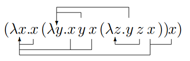

### Introduction
Lambda calculus (LC) is a formal, mathematical way to represent programming languages. It can be thought of as a purely functional "language", which consist of
* **Variables** $x$, which are denoted by single lower case letters;
* **Terms** $M \lra x | (\lambda x \cdot M) | (M\;M)$, in which
* $\lambda x \cdot M$ is **abstraction** (and can be thought of as a function)
* $M \; M$ is **application** (and can be thought of as applying functions)
In LC,
* Application associates **left**: $a\;b\;a = ((a \; b) \; a)$
* Abstraction associates **right**: $\lambda x \; y \cdot M = (\lambda x \cdot (\lambda y \cdot M))$. (Multiple abstraction can be collapsed)
* Application **binds stronger** than abstraction: $\lambda a \cdot a \; b \; a = (\lambda a \cdot ((a \; b) \; a))$
* Brackets are not included if not necessary.
* There *is no empty word*.
An abstraction (lambda) **binds** the variable that comes after it. All non-bound variables are **free**. In
$$\lambda a \cdot a \; b \; a$$
$a$ is a bound variable, $b$ is a free variable, and $a \; b \; a$ is the **scope** of variable $a$.
We can define properties about LC using structural induction (which looks like recursion). For example, let us define the set $FV(X)$ over a term $X$, of the free variables in that term. This can be defined as
$$
\begin{align*}
FV(x) &= \{x\} & \pod{x \in \textrm{Variables}}\\
FV(M_1\;M_2) &= FV(M_1) \cup FV(M_2) & \pod{M_1, M_2 \in \textrm{Terms}}\\
FV(\lambda x \cdot M) &= FV(M) \setminus \{x\} & \pod{M \in \rm{Terms}}
\end{align*}
$$
### Evaluation
Define **substitution** of a free variable $x$ by some term $N$, within another term $M$ as $[N/x]M$.
You can read $[N/x]$ as "N replaces x".
Some examples are given:
$$
\begin{align*}
[(\lambda x \cdot y) / a] (\lambda m \cdot a\;m) &\implies (\lambda m \cdot ((\lambda x \cdot y) \; m)). \\
[b / a] (\lambda x \cdot x \; y) &\implies (\lambda x \cdot x \; y).\\
[(\lambda x \cdot m) / a] (\lambda m \cdot a \; m) &\implies (\lambda m \cdot (\lambda x \cdot m) \; m) \pod{*}\\
&\equiv (\lambda m_1 \cdot (\lambda x \cdot m) \; m_1).
\end{align*}
$$
($*$) Note that we can substitute variables with the same label in, thus creating ambiguous labelling. This can and should be relabelled.
Formally, the rules for substitute are given
* $[N / x] x = N$
* $[N / x] (M_1 \; M_2) = ([N / x] M_1 \; [N / x] M_2)$
* $[N / x] (\lambda x \cdot M) = \lambda x \cdot M$ (bound variables **cannot** be substituted)
* $[N / x] (\lambda y \cdot M) = \lambda y \cdot ([N / x]M)$ if $x \neq y$ and $y \not \in FV(N)$
Substitution is a purely syntactic operation and should be thought of as such.
Substitution also has **capture avoidance** -- prevent accidental binding of free variables (hint: rename), and **freshness** -- if a variable is not free in $N$ it cannot be reused.
Define **$\alpha$-equivalence** as the principle that variable *name* doesn't matter, only the **order** and **binding status**.
Thus we can rename variables.
Define a **contraction**, also called a **$\beta$-reduction** as the following operation:
$$
(\lambda x \cdot M)\; N \underset{\beta \textrm{-red}}{\lra} [N / x]M
$$
The whole left hand side is called the **$\beta$-redex**.
You can think of this like a function $\lambda x \cdot M$ being passed in $N$ as its parameter $x$, so replace all instances of bound variable $x$ with $N$ in the function body.
* A reduction series is thus a series of contractions
* And a **normal form** is when all beta-redexes have been resolved.
* An **evaluation** $A \implies B$ or $A \lra^* B$ is a **full reduction** of $A$ to the corresponding **normal form** $B$.
* A **divergence** is when a formula cannot reach normal form.
Define eta **$\eta$-reduction** as the following simplification:
$$
\lambda x \cdot M \; x \underset{\eta}{\lra} M
$$
This can be thought of as unwrapping a redundant function call.
For multiple redexes, we have multiple reduction orders. In some cases, some reduction orders converge whilst others do not. In other cases, some reduction orders are quicker than others.
> Try $(\lambda a \; b \cdot b) ((\lambda x \cdot x\;x) (\lambda x \cdot x\; x)) (\lambda x \cdot x)$ yourself.
Assuming that $M \underset{\beta}{\lra} M'$ and $N \underset{\beta}{\lra} N'$ our three orders are
* $(\lambda x \cdot M) N \lra (\lambda x \cdot M) N'$ : **eager evaluation** (reduce argument)
* $(\lambda x \cdot M) N \lra [N/x]M$ : **lazy evaluation** (reduce function)
* $(\lambda x \cdot M) N \lra (\lambda x \cdot M') N$ : **optimising evaluation** (reduce function body)
For multiple candidate redexes, we can also reduce them based on their **physical** order.
* **Normal order** is reducing from the left
* **Applicative order** is reducing from the right
Normal will *always* converge if possible, whereas applicative may not.
> Try $(\lambda x \cdot (\lambda y \cdot (\lambda z \cdot (x \; z) (y \; z))))(\lambda u \cdot u)(\lambda v \cdot v)$ with both orders.
### Normal Forms
A normal form (NF) is an expression with **no redexes**.
...or at least, one may naively think, because it's not so simple.
Take $a ((\lambda b \cdot b\;b) (\lambda c \cdot c\;c))$. This has a redex, so it's not normal form, right? Said the average eager evaluation fan. The lazy evaluation enjoyer *would* say this is normal form.
Thus we make **head normal form** HNF -- where the head (the first term) is normal form and we don't care about arguments.
Take $\lambda a \cdot a ((\lambda b \cdot b) \; a)$. This is not in normal form, but the function body wouldn't be optimised in lazy execution. However this is also not HNF, as the head term is reducible.
Thus we make **weak normal form** WNF -- where function bodies are ignored.
Recall the definition of terms $M \lra x \;|\; (\lambda x \cdot M) \;|\; (M\;M)$
* **Normal form** is defined as $M \lra x \gang \lambda x \cdot M \gang M_1 \; M_2 \cdots M_n$.
* **HNF** is defined as $$M \lra x \gang \lambda x \cdot M \gang x\;m_1\;m_2\cdots m_n$$$ for any term $m_i$, which doesn't have to be NF.
* **WNF** is defined as $$M \lra x \gang \lambda x \cdot m \gang x \; M_1 \; M_2 \cdots M_n$$ for any term $m$, and (weak) **normal form** terms $M_i$.
* **Weak head normal form** (WHNF) is a combination of WNF and HNF, and is the most relaxed. It is defined as $$M \lra x \gang \lambda x \cdot m \gang x \; m_1 \; m_2 \cdots m_n$$ for any term $m, m_i$. i.e. as long as the top level has no redexes, we're good.
> Try: what normal forms are $a \; ((\lambda b \cdot b\; b)(\lambda c \cdot c \; c))$ in?
>
> Try: what normal forms are $\lambda a \cdot a \; ((\lambda b \cdot b\; b)(\lambda c \cdot c \; c))$ in?
### More Representations of LC
Note: none of these are extensions, as in they don't add anything new to the LC that we know. However, with the LC we have we can actually do rather a lot...
#### De Bruijn Representation
Variables can replace other variables through $\alpha$-equivalence conversion. We need this to avoid name collisions. Rather than using variable names, we can use place values instead of variable names.
Take $\lambda x \cdot x (\lambda y \cdot x \; y \; x \; (\lambda z \cdot y \; z \; x)) \; x$. We can label which occurrence binds to which abstraction:

(Sara Kalvala)
Rather than writing variable names, we just write how many levels up does the variable bind to. Thus this becomes
$$
\lambda\; 1 \;(\lambda \; 2 \; 1 \; 2 (\lambda \; 2 \; 1 \; 3)) \; 1
$$
So 1 means binding to the immediate lambda, 2 means one layer up, etc, etc. The lambdas are actually redundant too; we can just use brackets:
$$
(1\; (2\;1\;2\;(2\;1\;3))\;1)
$$
This is **de Bruijn's representation**.
This has the *minor* problem that using round brackets conflicts with using round brackets to specify order, in the case of $\lambda x\; y \cdot x \; (y \; x)$, this decomposes to $\lambda x \cdot \lambda y \cdot x \; (y\; x) = (1 ( 2 \; (1 \; 2)))$... except it doesn't because the start of a bracket implies a lambda.
So we have to mix brackets; $[1\; [2\; (1\; 2)]]$ which is fine since it's just notation, but switching notation can get confusing.
We also have the second *minor* problem of free variables -- just use an arbitrary string for them (i.e. keep the letters).
However, free variables are generally **unhelpful** and **bad** and need to be sent off to be **disciplined** and so we avoid having them if we can.
#### Combinatory Logic
Certain functions have rather interesting properties. These are the **combinators**, and each is given a letter.
As far as I remember you don't need to remember the equations but you do need to know what they do.
$$
\begin{align*}
I &= \lambda x \cdot x & S &= \lambda x \cdot \lambda y \cdot \lambda z \cdot x\; z\;(y\;z) \\
K &= \lambda x \cdot \lambda y \cdot x & B &= \lambda x \cdot \lambda y \cdot \lambda x \cdot x\;(y\;z)\\
Y &= \lambda f \cdot (\lambda x \cdot f\;(x\;x))(\lambda x \cdot f\;(x\;x)) & T &= \lambda x \cdot \lambda y \cdot y \; x
\end{align*}
$$
Note there are no free variables. $I$ is generally called "identity", $K$ is generally called "constant", $T$ is generally called "transpose", and $Y$ is the $Y$ combinator, because it's special. (this comes up really far on)
It is provable that any combinator can be made using $S$ and $K$.
$$
\begin{align*}
I &= SKK\\
B &= S(KS)K\\
T &= B(SI)K
\end{align*}
$$
($Y$ is complicated but possible.)
### Church Encodings
An "extension" (but not really) of lambda calculus, by strategically making functions we can get some... interesting things. Developed by someone surnamed Church.
Take:
$$
\begin{align*}
T &= \lambda x\; y \cdot x\\
F &= \lambda x \; y \cdot y\\
IF &= \lambda p \; x \; y \cdot p \; x \; y
\end{align*}
$$
Note how $IF\; T \; a \; b \implies a$, whereas $IF \; F \; a \; b \implies b$. Suspiciously... boolean, no?
Take:
$$
\begin{align*}
A &= \lambda p\; q \cdot p \; q \; p\\
O &= \lambda p \; q \cdot p \; p \; q\\
N &= \lambda p \; a \; b \cdot p \; b \; a
\end{align*}
$$
Note how $N \; T \implies F$, and $A \; T \; x \implies x$. Make the derivations yourself :).
$T, F, IF, A, O, N$ are encodings found by Church for booleans and boolean operations.
Now take:
$$
\begin{align*}
Add &= \lambda i \; j \; f \; x \cdot (i\; f) \;(j\;f\;x)\\
0 &= \lambda f \; x \cdot x\\
1 &= \lambda f \; x \cdot f \; x
\end{align*}
$$
These are Church encodings for numbers. We can try $Add \; 0 \; 1 \implies 1$. We can also add ones to get $ 2 = \lambda f \; x \cdot f \; f \; x$. In fact, this is a consistent pattern.
Note how $0 \equiv F$, zero is false, but $1 \not \equiv T$, and is not true. We could easily get confused where we are, and so we may want to introduce...
Types.